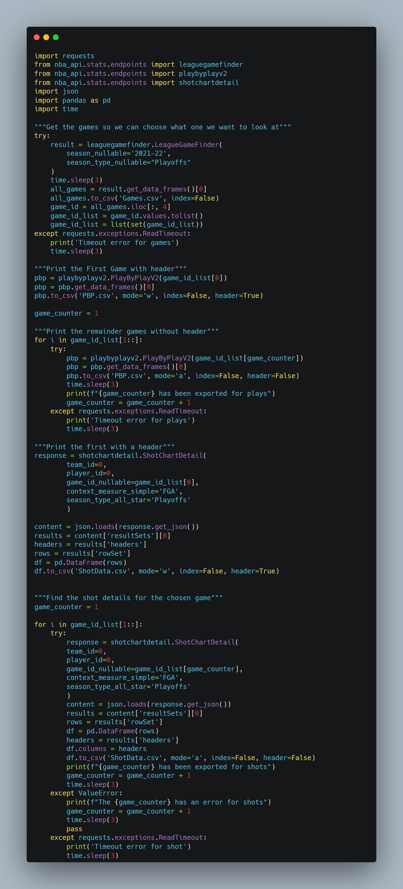
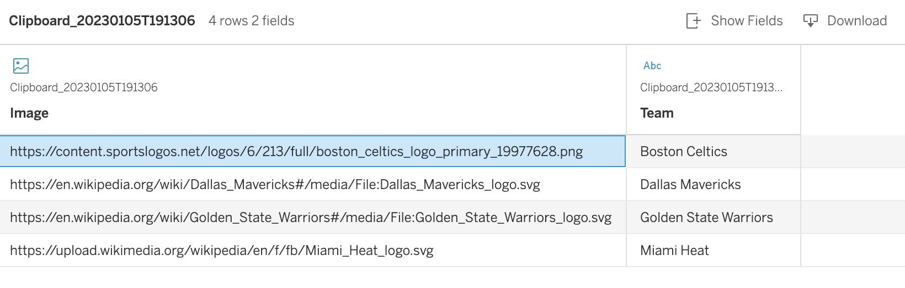
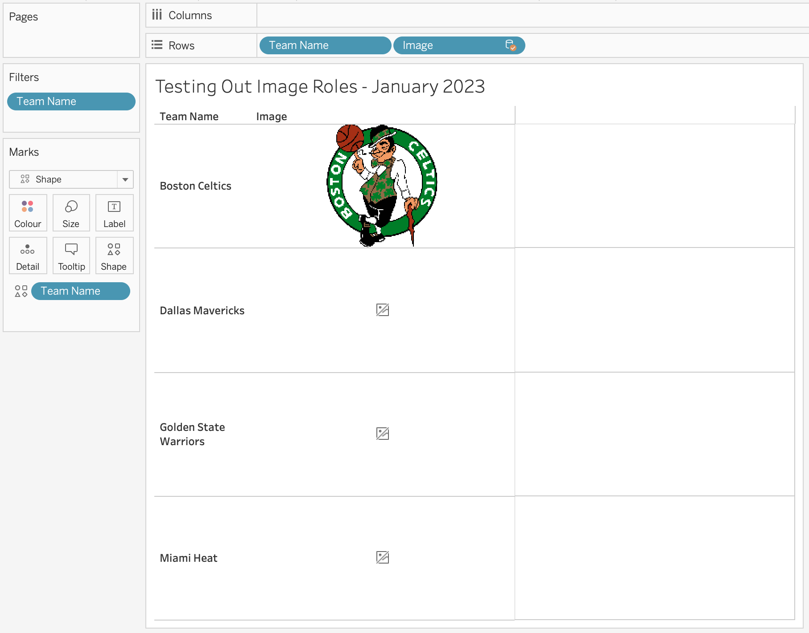
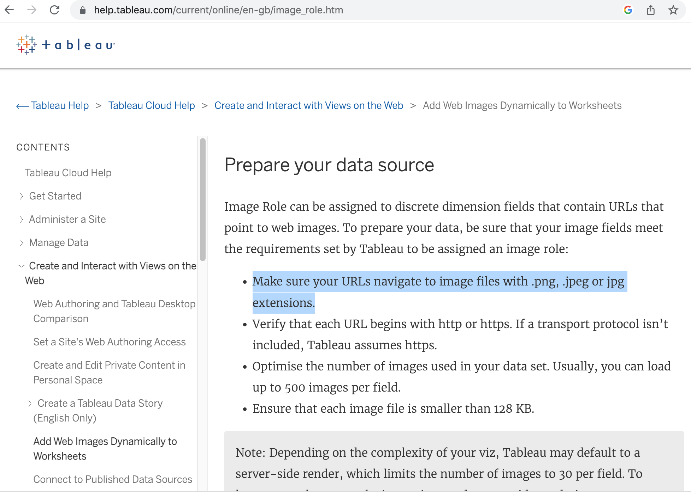
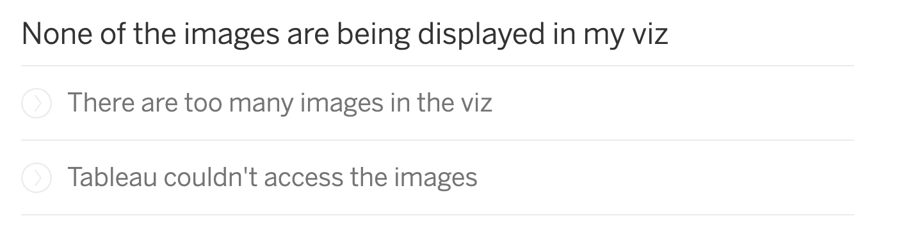
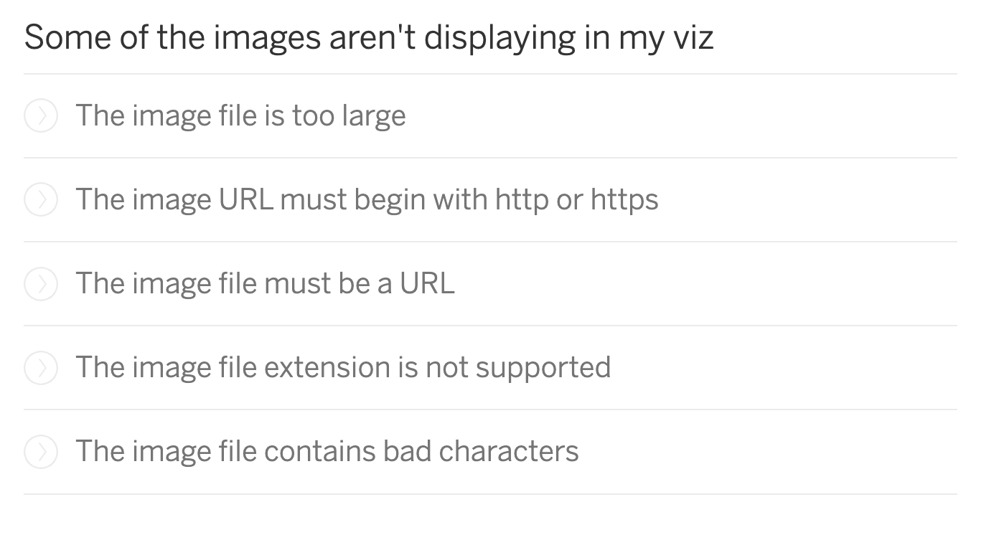
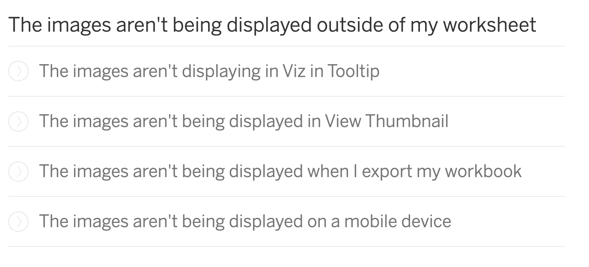
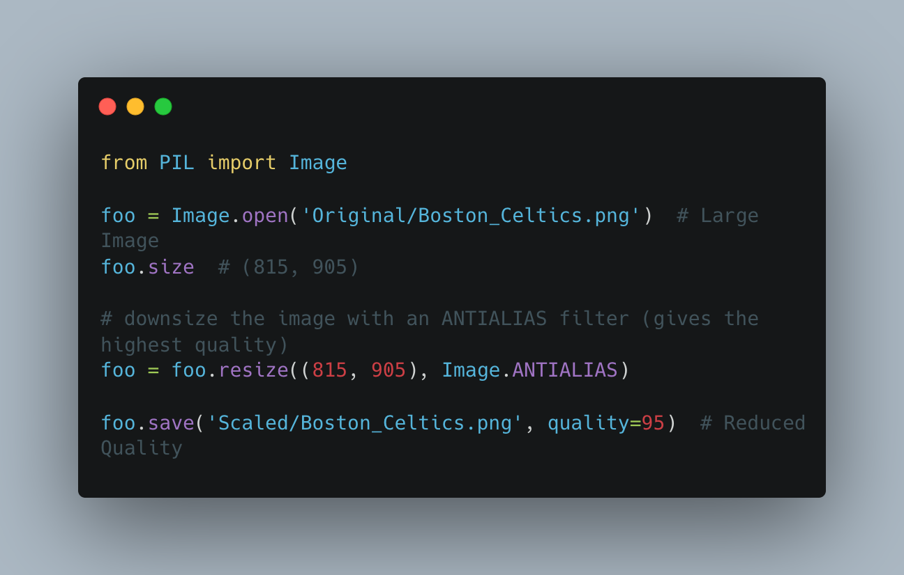
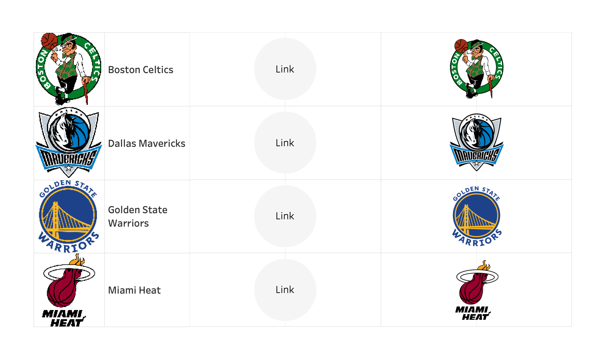
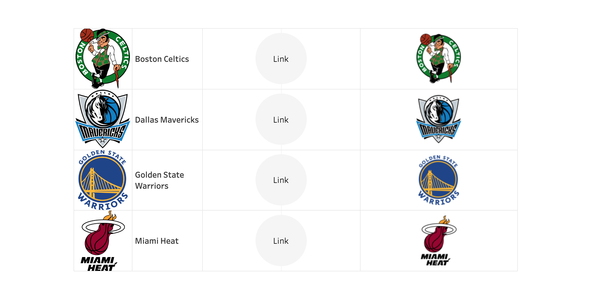

Hi all,
Welcome back. It's been about a year since I did a write up on NBA data.
You can refresh your memory on how to create NBA shot maps from a previous blog I wrote called 'Python: From Benchwarmer to MVP'
Safe to say my code still works. Talk about building robust code huh! Anyway, for todays blog we will take some of that data and look at different ways we can perhaps chart some of the teams using the new image role functionality in Tableau.
Truth be told, you don't actually need any of the NBA python data, but two birds one stone with these things.
As a small recap:
You can access the code for yourself at the top of the blog following the GitHub link. I've updated it to look at the 2021-22 Playoffs.

If you'd like to cross reference the data a little bit, I'd recommend reading about the playoff bracket here.
Todays blog will be more aimed at Image Roles, less so basketball - but always nice to tie it back to sports.
You can read a little more on Image Roles, here. Worth noting, you will need to be on 2022.4 - so get your upgrade on.

Above is my dataset that I am attaching to the Games file, based on a blend of Team to team.
What you will notice is that 3 of them are svg's from wikipedia, the other is a png from a sports logo website.

Okay looks like SVG's don't work yet, that's the first thing to recognise. This also will mean no to GIF's!
No problem, we can work with jpgs and pngs for now.
Probably time to dig out the documentation to see what we are working with..
Check it out here.

The other thing that sticks out to me here is the image file needs to be smaller than 128KB.
Okay that instantly wipes out a bunch of resources online. But the Boston logo comes in at about 53 so fits the requirements.
What you will notice if the images don't meet the requirements is the grey small box appear.
Fortunately Tableau has listed a whole bunch of guides as to why an image may not render as expected.
It includes everything from nothing being rendered,

to some not rendering,

to specific user cases

So we can either...
find images online that fit this criteria.
Or... force a way for images to fit it.
Well luckily I have some code that will help us resize and format any image saved from the internet.

This code will take your file, for example our Boston Celtics logo, and resize it and reduce the quality of the image in order to compress it.
Fantastic.
But then we are stuck with a saved down file.
How are we going to be able to access it for image roles?
Well, luckily I have a public GitHub repo. Once I rescale my images and store all my 4 images in the public repo, they each will have their own links.
The code has helped resize the images and reduce the quality of the images in order to bring them down to roughly 100kb, give or take.
Let's find the URL's on the repo for the four images.
Here are the new links
https://raw.githubusercontent.com/CJ-Mayes/Website-Tutorials/main/2023%20Blogs/2023-01-06%20Image%20Roles%20NBA%20PlayOffs/Scaled/Boston_Celtics.png
https://raw.githubusercontent.com/CJ-Mayes/Website-Tutorials/main/2023%20Blogs/2023-01-06%20Image%20Roles%20NBA%20PlayOffs/Scaled/Dallas_Mavericks.png
https://raw.githubusercontent.com/CJ-Mayes/Website-Tutorials/main/2023%20Blogs/2023-01-06%20Image%20Roles%20NBA%20PlayOffs/Scaled/Golden_State_Warriors.png
https://raw.githubusercontent.com/CJ-Mayes/Website-Tutorials/main/2023%20Blogs/2023-01-06%20Image%20Roles%20NBA%20PlayOffs/Scaled/Miami_Heat.png
They Meet the requirements on size, link style and image format.
Interesting enough when working in desktop the image url doesnt render amazingly, but the shape file looks okay.

But once published to server, the image quality is far better, and the shape file loses some of it's quality.

So to summarise:
I'm pretty happy with the quality of the rendering.
The size limit may cause some problems.
I think it opens doors when storing images in public repositories and drives that are accessible to all!
Once published image roles have a much higher resolution than shape files.
I'd like to see more flexibility in scaling the images to proportions and sizes. I think demo's have tended to have the perfect circle, maybe even introducing a masking effect or circular overlay may help keep images tidy? I've seen Tim do some nice work in this space using Cloudinary.
At the moment shape files have the advantage of being able to positioned anywhere on a chart, I can't seem to find a way to do the same with an image role, other than in a table.
Let me know how you get on with the Image Role functionality,
I hope this blog has helped you, access NBA data, use python to amend image sizes and understand the pros and cons of Image roles.
LOGGING OFF,CJ